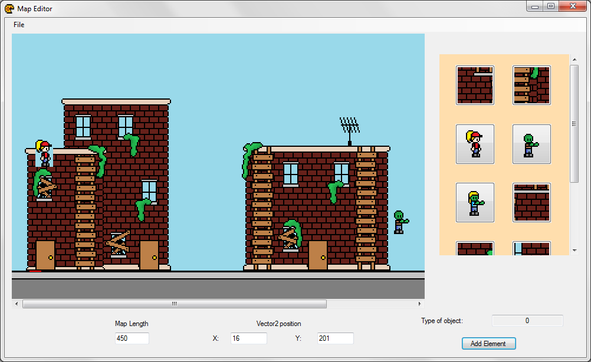

While developing Apocalpytic Pizza Dash, one of the additional requirements was to develop a tool to assist in development with the game. We decided that the best tool for our project was a level editor, so I got to work on that. The vast majority of the work displayed in the editor is my own, with some minor assistance from Chris Schiff. The artwork was provided by Eleanor Post.
The level editor was made in C#, using Windows Forms.
